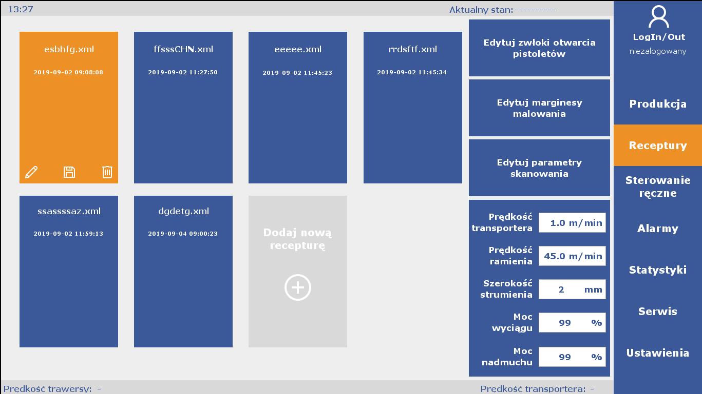
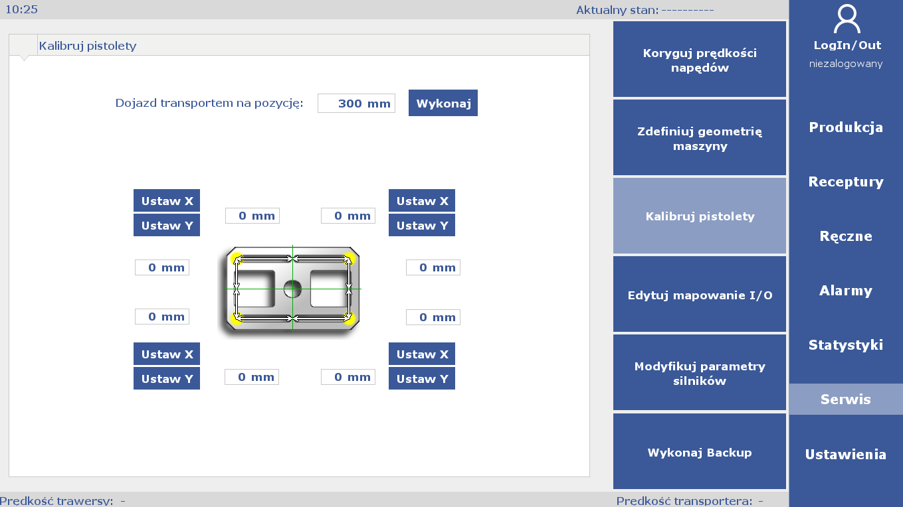
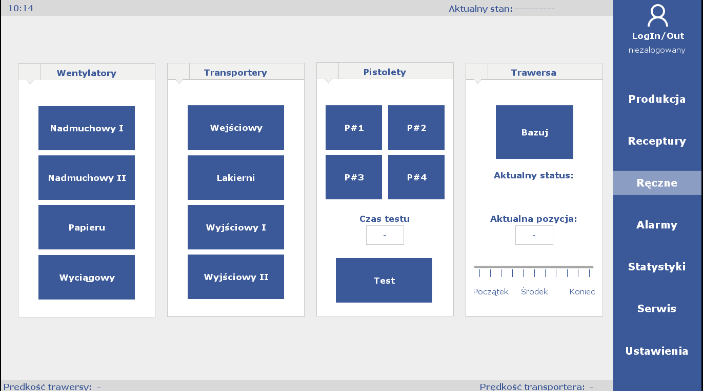
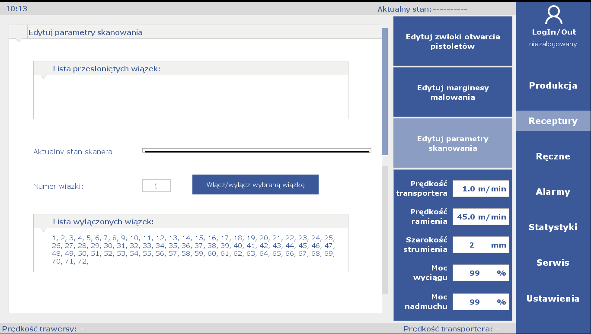
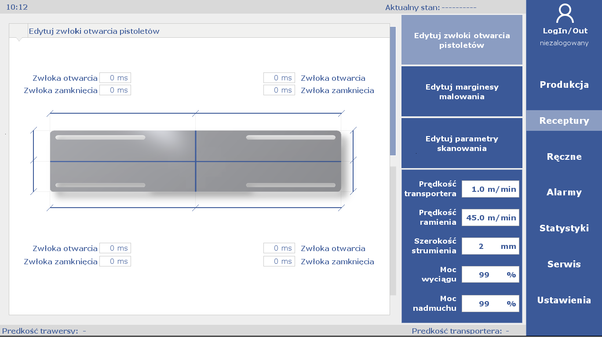
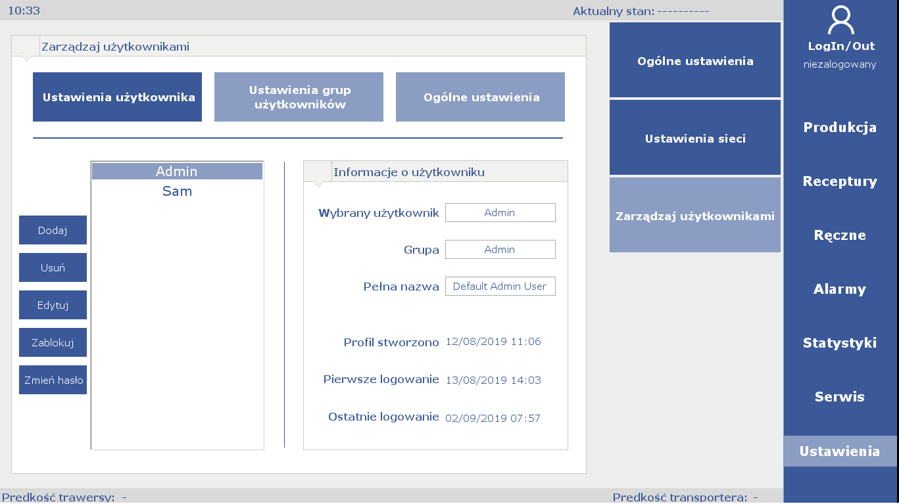

Uni-One

My job in this project was to develop brand new software for a new product line. I am especially proud of design of the User Interface you can see below.






I've designed new algorithms for machine vision. The code was developed in Structured Language. Not commonly used outside of industrial automation world.
Watch this beast in an action:
This was pretty big project, with many months of development.
More information about machine can be found here (in polish).